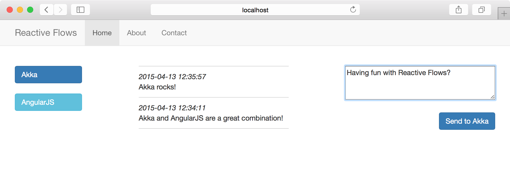
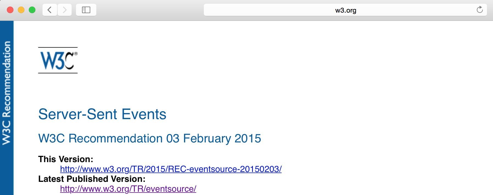
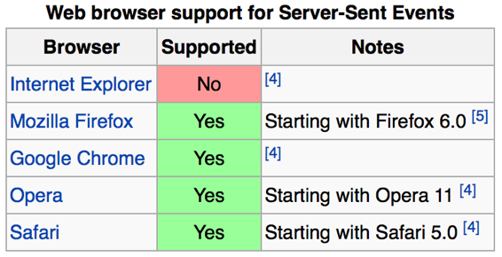

<!doctype html>
<html lang="en">

  <head>
    <meta charset="utf-8">

    <title>Reactive Apps with Akka and AngularJS</title>

    <meta name="description" content="Reactive Apps with Akka and AngularJS">
    <meta name="author" content="Heiko Seeberger">

    <meta name="apple-mobile-web-app-capable" content="yes" />
    <meta name="apple-mobile-web-app-status-bar-style" content="black-translucent" />

    <meta name="viewport" content="width=device-width, initial-scale=1.0, maximum-scale=1.0, user-scalable=no, minimal-ui">

    <link rel="stylesheet" href="css/reveal.css">
    <link rel="stylesheet" href="css/theme/black.css" id="theme">
    <link rel="stylesheet" href="css/deck.css">

    <!-- Code syntax highlighting -->
    <link rel="stylesheet" href="lib/css/github.css">

    <!-- Printing and PDF exports -->
    <script>
      var link = document.createElement( 'link' );
      link.rel = 'stylesheet';
      link.type = 'text/css';
      link.href = window.location.search.match( /print-pdf/gi ) ? 'css/print/pdf.css' : 'css/print/paper.css';
      document.getElementsByTagName( 'head' )[0].appendChild( link );
    </script>

    <!--[if lt IE 9]>
    <script src="lib/js/html5shiv.js"></script>
    <![endif]-->
  </head>

  <body>

    <div class="reveal">

      <!-- Any section element inside of this container is displayed as a slide -->
      <div class="slides">

<!-- ########################################################################################### -->
<!-- START                                                                                       -->
<!-- ########################################################################################### -->

<section data-markdown data-background="img/codecentric-title-background-16x9.png"><script type="text/template">
## Reactive Apps
## with Akka and AngularJS

Heiko Seeberger, codecentric
</script></section>

<!-- ########################################################################################### -->

<section data-markdown><script type="text/template">
### Reactive Traits


</script></section>

<!-- ########################################################################################### -->

<section data-markdown data-background="img/codecentric-green-background-16x9.png"><script type="text/template">
### Let's go Reactive
### with Akka and AngularJS
</script></section>

<!-- ########################################################################################### -->

<section data-markdown><script type="text/template">
### Reactive Flows


</script></section>

<!-- ########################################################################################### -->

<section data-markdown><script type="text/template">
### Reactive Flows – Architecture


</script></section>

<!-- ########################################################################################### -->

<section data-markdown><script type="text/template">
### AngularJS – Templates

``` html
<div ng-repeat="msg in messages | orderBy:'date':true">
    <div>
        <div class="date-time">{{msg.date}}</div>
        <div class="text">{{msg.text}}</div>
    </div>
</div>
```
</script></section>

<!-- ########################################################################################### -->

<section data-markdown><script type="text/template">
### AngularJS – Controllers

``` js
reactiveFlowsControllers.controller('HomeCtrl', ['$scope', function($scope) {

    $scope.flows = [
        {name: 'akka', label: 'Akka'},
        {name: 'angularjs', label: 'AngularJS'}
    ];

    $scope.messages = [
        {text: 'Akka rocks!', dateTime: '2015-04-14 19:20:21'}
    ];
}
```
</script></section>

<!-- ########################################################################################### -->

<section data-markdown data-background="img/codecentric-green-background-16x9.png"><script type="text/template">
### AngularJS – Demo
</script></section>

<!-- ########################################################################################### -->

<section data-markdown><script type="text/template">
### Akka HTTP – Server Binding

``` scala
Http(context.system)
    .bindAndHandle(route(self), interface, port)
    .pipeTo(self)
```
</script></section>

<!-- ########################################################################################### -->

<section data-markdown><script type="text/template">
### Akka HTTP – Routing

``` scala
def route(httpService: ActorRef)(implicit ec: ExecutionContext) = {
  import Directives._

  def assets = getFromResourceDirectory("web") ~ path("")(getFromResource("web/index.html"))

  def shutdown = path("") {
    delete {
      complete {
        httpService ! Shutdown
        "Shutting down now ..."
      }
    }
  }

  assets ~ shutdown
}
```
</script></section>

<!-- ########################################################################################### -->

<section data-markdown data-background="img/codecentric-green-background-16x9.png"><script type="text/template">
### Akka HTTP – Demo
</script></section>

<!-- ########################################################################################### -->

<section data-markdown><script type="text/template">
### Server-Sent Events


</script></section>

<!-- ########################################################################################### -->

<section data-markdown><script type="text/template">
### Server-Sent Events – Browser Support


</script></section>

<!-- ########################################################################################### -->

<section data-markdown><script type="text/template">
### Server-Sent Events – Communication


</script></section>

<!-- ########################################################################################### -->

<section data-markdown><script type="text/template">
### Server-Sent Events – Client

``` js
// SSE for messages
var messageSource = new EventSource('/message-events');
messageSource.addEventListener(
    'added',
    function(event) {
        $scope.$apply(function() {
            var messageAdded = JSON.parse(event.data);
            if ($scope.currentFlowName == messageAdded.flowName)
                $scope.messages.push(messageAdded.message);
        });
    },
    false
);
```
</script></section>

<!-- ########################################################################################### -->

<section data-markdown><script type="text/template">
### Server-Sent Events – Server

``` scala
def messageEvents = path("message-events") {
  implicit val timeout = httpServiceTimeout
  get {
    complete {
      (httpService ? CreateMessageEventSource)
        .mapTo[Source[ServerSentEvent, Any]]
    }
  }
}
```
</script></section>

<!-- ########################################################################################### -->

<section data-markdown data-background="img/codecentric-green-background-16x9.png"><script type="text/template">
### Server-Sent Events – Demo
</script></section>

<!-- ########################################################################################### -->

<section data-markdown><script type="text/template">
### Akka Distributed Data

- Consistency of replicas without central coordination?
- Certain data structures allow for eventual consistency
  - Conflict-Free Replicated Data Types (CRDTs)
  - State-based (CvRDTs) or operation-based (CmRDTs)
- Akka Distributed Data offers various CvRDTs
  - Counter, Set, Map, etc.
</script></section>

<!-- ########################################################################################### -->

<section data-markdown><script type="text/template">
### Akka Distributed Data – Communication


</script></section>

<!-- ########################################################################################### -->

<section data-markdown data-background="img/codecentric-green-background-16x9.png"><script type="text/template">
### Akka Distributed Data – Demo
</script></section>

<!-- ########################################################################################### -->

<section data-markdown><script type="text/template">
### Akka Cluster Sharding

- Partitioning of identifiable actors across a cluster
- Management of subsets – shards
- Dynamically adapt to cluster topology
</script></section>

<!-- ########################################################################################### -->

<section data-markdown><script type="text/template">
### Akka Cluster Sharding – Communication


</script></section>

<!-- ########################################################################################### -->

<section data-markdown data-background="img/codecentric-green-background-16x9.png"><script type="text/template">
### Akka Cluster Sharding – Demo
</script></section>

<!-- ########################################################################################### -->

<section data-markdown><script type="text/template">
### Akka Persistence

- How can actor state be persisted and recovered?
- Event Sourcing:
  1. Create event for valid command
  1. Let journal persist event
  1. Apply event after successful persistence
- On recovery only events are replayed
</script></section>

<!-- ########################################################################################### -->

<section data-markdown data-background="img/codecentric-green-background-16x9.png"><script type="text/template">
### Akka Persistence – Demo
</script></section>

<!-- ########################################################################################### -->

<section data-markdown><script type="text/template">
## Thank you!

- Code on GitHub: [hseeberger/reactive-flows](https://github.com/hseeberger/reactive-flows)
- Follow me on Twitter: [@hseeberger](https://twitter.com/hseeberger)

&nbsp;

[](http://creativecommons.org/licenses/by/4.0)<br>
<span class="license">
This work is licensed under a [Creative Commons Attribution 4.0 International License](http://creativecommons.org/licenses/by/4.0) and powered by [reveal.js](https://github.com/hakimel/reveal.js) under its [LICENSE](https://github.com/hakimel/reveal.js/blob/master/LICENSE).
</span>
</script></section>

<!-- ########################################################################################### -->
<!-- END                                                                                         -->
<!-- ########################################################################################### -->

      </div>

    </div>

    <script src="lib/js/head.min.js"></script>
    <script src="js/reveal.js"></script>

    <script>

      // Full list of configuration options available at:
      // https://github.com/hakimel/reveal.js#configuration
      Reveal.initialize({
        controls: true,
        progress: true,
        history: true,
        center: true,

        transition: 'slide', // none/fade/slide/convex/concave/zoom

        // Optional reveal.js plugins
        dependencies: [
          { src: 'lib/js/classList.js', condition: function() { return !document.body.classList; } },
          { src: 'plugin/markdown/marked.js', condition: function() { return !!document.querySelector( '[data-markdown]' ); } },
          { src: 'plugin/markdown/markdown.js', condition: function() { return !!document.querySelector( '[data-markdown]' ); } },
          { src: 'plugin/highlight/highlight.js', async: true, callback: function() { hljs.initHighlightingOnLoad(); } },
          { src: 'plugin/zoom-js/zoom.js', async: true },
          { src: 'plugin/notes/notes.js', async: true }
        ]
      });

    </script>

  </body>
</html>
